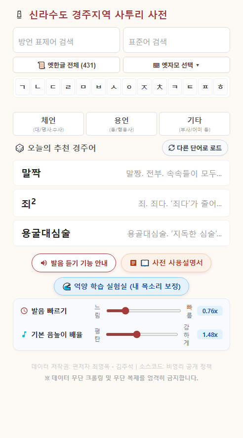
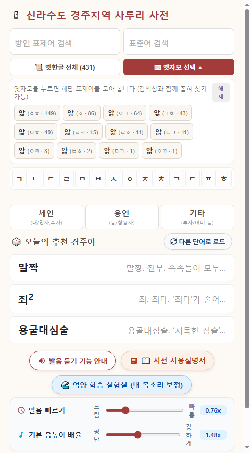
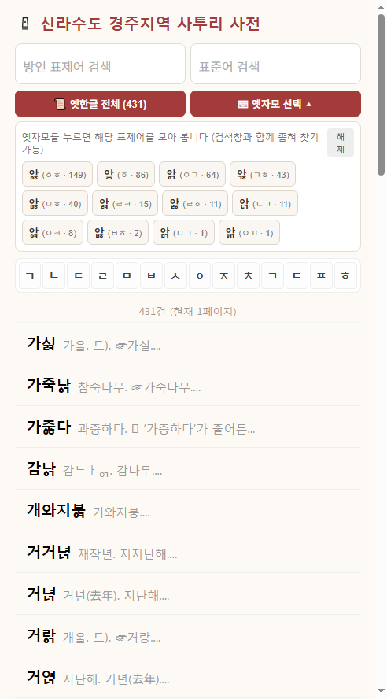
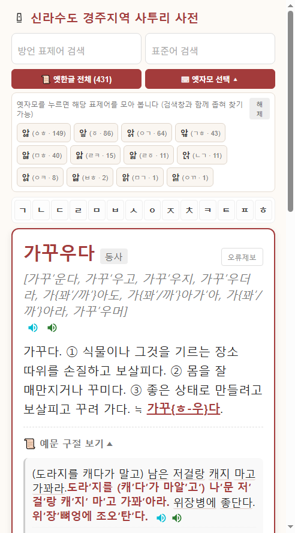
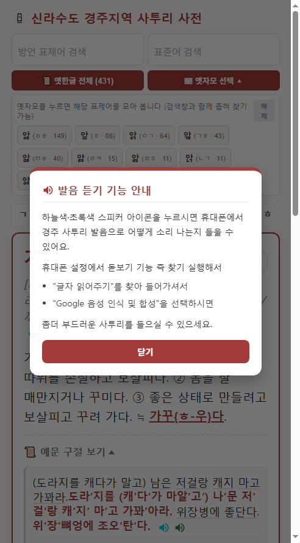
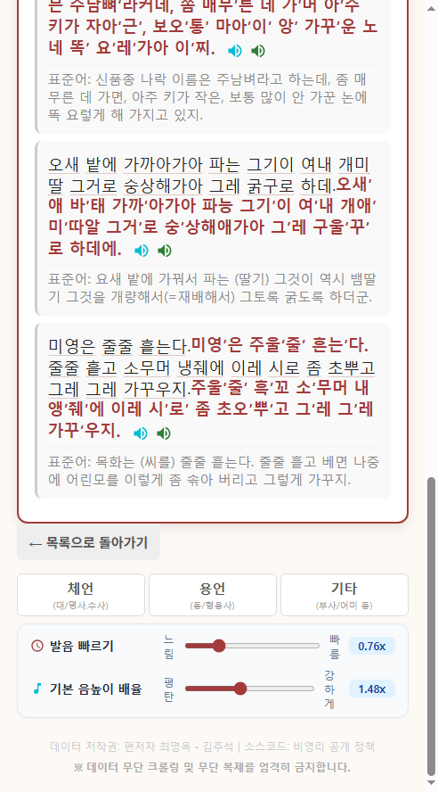
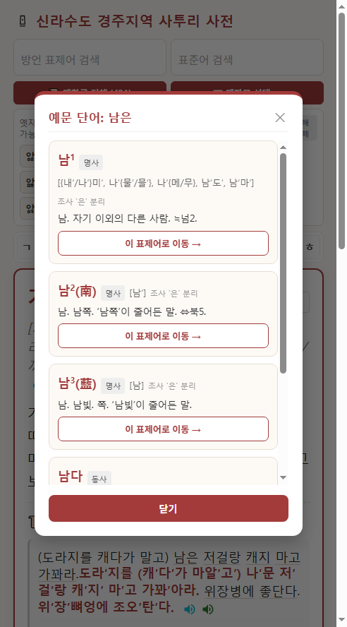

자료 출처 및 저작권
편저자: 최명옥(서울대학교 명예교수) · 김주석
수록 어휘: 경주 지역 토박이 방언 표제어 41,005건 및 풍부한 구술 실생활 예문·관용구·속담
시스템: 웹 기반 실시간 반응형 방언 사전 & 무단절 성조 음성 합성(TTS) 엔진
《신라수도 경주지역 사투리 사전》은 신라의 천년 수도였던 경주 지역의 고유 언어 유산을 집대성한 디지털 웹 사전입니다. 15세기 훈민정음 창제 당시의 성조(평성·거성·상성) 체계와 옛한글 자모(순경음, 아래아, 복합 자음 등)를 고스란히 간직한 살아있는 경주 방언을 누구나 쉽게 검색하고 원음의 억양 그대로 귀로 들을 수 있도록 개발되었습니다.
flowchart LR
A["검색 & 탐색
(방언/표준어/초성/품사/옛한글)"] --> B["표제어 목록
(41,005건 실시간 정렬)"]
B --> C["단어 상세 화면
(뜻풀이 & 예문·속담)"]
C --> D["사투리 발음 듣기
(2번 WSOLA / 3번 단음강세)"]
C --> E["예문 단어 클릭 팝업
(표제어 점프 & 이전 단어 복귀)"]
사전은 모바일 스마트폰과 태블릿, PC 모니터 모든 환경에 최적화된 반응형 인터페이스를 갖추고 있습니다.

| 구역 | 명칭 | 기능 설명 |
|---|---|---|
| 상단 헤더 | 제목 및 로고 | 《신라수도 경주지역 사투리 사전》 성덕대왕신종 모티프 로고 |
| 검색창 행 | 2중 입력창 | 방언 표제어 검색창과 표준어 검색창이 나란히 배치되어 양방향 검색 가능 |
| 옛한글 도구 | 📜 옛한글 전체 / ⌨ 옛자모 선택 ▾ |
옛한글 표제어 전체 모아보기 및 12종 옛받침 자모 입력 팔레트 열기 |
| 초성 색인 | 초성 그리드 (ㄱ ~ ㅎ) |
19개 현대 한글 자음 버튼으로 해당 초성의 표제어 사전순 정렬 목록 열람 |
| 품사 필터 | 체언 / 용언 / 기타 |
명사/대명사/수사, 동사/형용사, 부사/어미 등 문법 갈래별 필터링 |
| 추천 경주어 | 🎲 오늘의 추천 경주어 |
사전 속 흥미로운 방언 단어 3개를 무작위 추천 (다른 단어로 로드 버튼 제공) |
| 하단 안내 | 기능 안내 & 실험실 링크 | 발음 듣기 기능 안내 모달 팝업 및 억양 학습 실험실(demo_prosody.html) 바로가기 |
| 상시 조절바 | 발음 빠르기 & 기본 음높이 배율 |
저작권 바로 위 고정 영역으로, 메인과 상세 화면 모두에서 상시 조작 가능 |
사용자는 자신이 알고 있는 단어의 형태나 목적에 따라 5가지 방식으로 자유롭게 어휘를 찾을 수 있습니다.
flowchart TD
Start["단어 찾기 시작"] --> Q1{"어떤 단어를 아시나요?"}
Q1 -- "사투리 단어" --> S1["[사투리 검색] 입력창
(예: '가꾸우다', '도라지')"]
Q1 -- "표준어 뜻" --> S2["[표준어 검색] 입력창
(예: '재배하다', '가꾸다')"]
Q1 -- "첫 자음" --> S3["[초성 버튼] 클릭
('ㄱ', 'ㄴ', 'ㄷ' ... 'ㅎ')"]
Q1 -- "문법 갈래" --> S4["[품사 버튼] 클릭
(체언 / 용언 / 기타)"]
Q1 -- "옛한글 표기" --> S5["[옛한글 도구] 활용
(전체 목록 / 자모 팔레트)"]
방언 표제어 검색 입력창에 찾고자 하는 사투리를 입력합니다.{} 중괄호 표기(예: 가꾸{우/ㅎ}다)로 묶인 어간 변이형도 자동으로 분해 매칭되므로 어느 형태를 검색해도 정확히 찾아냅니다.표준어 검색 입력창에 표준어 의미(예: 가꾸다, 벼, 호미, 무덤)를 입력합니다.ㄱ, ㄲ, ㄴ, ㄷ, ㄸ, ㄹ, ㅁ, ㅂ, ㅃ, ㅅ, ㅆ, ㅇ, ㅈ, ㅉ, ㅊ, ㅋ, ㅌ, ㅍ, ㅎ) 중 하나를 터치/클릭합니다.체언(대/명사,수사): 사물이나 사람, 수량을 나타내는 명사 중심 어휘 필터링용언(동/형용사): 동작이나 상태를 나타내는 동사 및 형용사 필터링기타(부사/어미 등): 경주 방언의 맛깔스러운 부사, 감탄사, 연결/종결 어미 필터링🎲 오늘의 추천 경주어 카드 3장을 통해 매번 새로운 경주 고유어를 자연스럽게 접할 수 있습니다.다른 단어로 로드 버튼을 누르면 즉시 새로운 랜덤 단어 3개가 교체 로드됩니다.경주 방언에는 조선 전기 문헌에 남아있던 순경음, 아래아, 옛이응, 복합 받침 등이 실제 발음으로 살아있어 사전 표제어에도 옛한글이 그대로 표기되어 있습니다. 본 사전은 별도의 옛한글 키보드가 없는 스마트폰 사용자도 손쉽게 옛한글을 찾을 수 있는 3중 검색 시스템을 제공합니다.

📜 옛한글 전체 원클릭 버튼⌨ 옛자모 선택 ▾ 팔레트 입력| 자모 칩 | 조합 형태 | 대표 발음 예시 단어 |
|---|---|---|
| ᇅ | ㄴㄱ 받침 |
금녀ᇅ (금녘, 서쪽) |
| ᇹ | ㆆ (여린히읗) 받침 |
들어부ᇹ다 (단숨에 들이붓다) |
| ᇾ | ㄱㅎ 받침 |
가ᇾ (겉, 표면) |
| ᇬ | ㅇㄱ 받침 |
가죽나ᇬ (가죽나무) |
| ᇡ | ㅁㅎ 받침 |
구ᇡ (구멍) |
| ᇘ | ㄹㅋ 받침 |
부ᇘ다 (붉다) |
| ᇙ | ㄹㆆ 받침 |
이ᇙ (일찍) |
| ᇯ | ㅇㅋ 받침 |
주ᇯ다 (죽다) |
| ᇥ | ㅂㅎ 받침 |
잡수ᇹ고 (잡수시고) |
| ᇚ | ㅁㄱ 받침 |
나ᇚ (나무) |
| ᇭ | ㅇㄲ 받침 |
바ᇭ (밖) |
| ퟶ | ㆁㅎ 받침 |
가ퟶ (가장자리) |
[!NOTE]
옛자모 팔레트 12종 정돈 및 '왕임ㅎ다' 오기 교정
기존 원문의 '왕ᄋᆝᇡ다'(왕임하다의 축약형)에 포함되어 있던 '아래아+이'(ᆝ) 표기는 조사 결과 사전 전체에서 유일하게 나타난 '이' 모음(ᅵ)의 오기임이 확인되어왕이ᇡ다로 바로잡았습니다. 이에 따라 사전에 실제로 쓰이는 고유 옛한글 자모는 12종의 옛받침 자모(종성)로 정돈되었으며, 팔레트에서도 불필요해진 'ㆍㅣ' 칩이 제외되었습니다.
[!TIP] 자모 칩을 터치하면 해당 옛자모가 자동으로 검색창에 입력되고, 해당 자모가 포함된 모든 단어 목록으로 즉시 필터링됩니다. 다시 버튼을 누르면 팔레트가 접힙니다.
키보드에 옛한글이 없더라도 일반 현대 한글로 검색하면 내부 변환 엔진(buildApproxSearchForms)이 자동으로 유사 옛한글을 함께 찾아줍니다.
금녁 또는 금녕 검색 시 → 금녀ᇅ 자동 매칭들어붓다 검색 시 → 들어부ᇹ다 자동 매칭ᇅ(ㄴㄱ) 받침은 현대 ㄴ과 ㄵ 사이에 정확히 위치하며, ᇹ(ㆆ) 받침은 ㅎ 직전에 순서대로 배열되어 사전을 넘기듯 직관적으로 찾을 수 있습니다.검색창에 글자를 입력하거나 초성/옛한글 버튼을 누르면 목록 뷰가 열립니다.

○건 (현재 1페이지)로 총 검색된 어휘 수가 표시됩니다.이전/다음 버튼으로 페이지를 넘길 수 있습니다.¹, ²) 명사, 동사, 형용사 등)상세 화면에서는 표제어의 완벽한 문법 정보, 정밀 발음 표기, 단계별 뜻풀이, 실생활 예문과 관용구/속담을 집약해 보여줍니다.

오류제보 링크를 누르면 사전 편찬팀으로 수정 제안 이메일을 바로 발송할 수 있습니다.ː 또는 모음 연속)과 고조 성조(강세표 ′)가 표시된 정밀 음성학적 발음 표기가 나타납니다.1., 2., 3. 번호별로 상세 표준어 뜻풀이가 줄바꿈되어 정돈되어 제공됩니다.📜 예문 구절 보기 아코디언 토글본 사전의 백미는 단순한 텍스트 사전을 넘어 경주 방언의 억양과 성조를 소리로 직접 체득할 수 있다는 점입니다.
flowchart TD
Click["스피커 버튼 클릭"] --> Choice{"스피커 종류 선택"}
Choice -- "2번 (하늘색 버튼)" --> Sky["WSOLA 무단절 사투리 합성
(장모음 연결 + 성조 곡선 발화)"]
Choice -- "3번 (초록색 버튼)" --> Green["2번 엔진 + 단음 강세 보강
(단음 강세 1.12배 연장 & 피치 타격)"]
Sky --> Speech["문장 종결 및 10어절 초과 균형 호흡구 분할 발화"]
Green --> Speech
.speaker-btn-sky).speaker-btn-green),)가 있더라도 문장을 쪼개지 않고 1개의 자연스러운 호흡구로 매끄럽게 발화합니다.,)나 경주 방언 연결어미(-머, -가아, -고, -니꺼네, -는데, -거덩 등)**를 스스로 찾아 6~8어절 단위로 숨을 고르며 균형 있게 나누어 읽어줍니다.스마트폰 기종에 따라 사투리가 어색한 기계음으로 들릴 경우, 스마트폰 설정에서 TTS 엔진을 Google 음성으로 변경하면 가장 유려한 억양을 들을 수 있습니다.

화면 하단 저작권 표시 바로 위에는 슬라이더 조절 바 2종이 배치되어 있습니다. 이 조절 바는 메인 첫 화면뿐 아니라 개별 단어 상세 화면에서도 상시 노출됩니다.

발음 빠르기 조절 바0.60x (느림) ~ 1.30x (빠름)0.76x (경상도 특유의 음장과 성조를 또렷하게 음미하기에 가장 적합한 표준 속도)기본 음높이 배율 조절 바1.05x (평탄) ~ 2.10x (강하게)1.48x (+6.8 반음 상승 대역)localStorage)에 자동 기억되므로 사전을 다시 열어도 유지됩니다.예문을 읽다가 모르는 사투리 어휘가 나왔을 때, 검색창으로 다시 돌아가 타이핑할 필요 없이 단어를 터치하는 것만으로 즉시 뜻을 확인하고 이동할 수 있습니다.

sequenceDiagram
autonumber
actor User as 사용자
participant Ex as 예문 화면 (가꾸우다)
participant Modal as 예문 단어 찾기 모달
participant Next as 점프한 단어 (도라지)
User->>Ex: 예문 속 점선 단어 터치 ('도라′지를')
Ex->>Modal: 활용형 어형 분석 후 원형 매칭 (도라지)
Modal-->>User: 팝업 카드 표시 (품사, 발음, 뜻 요약)
User->>Modal: [이 표제어로 이동 →] 버튼 클릭
Modal->>Next: '도라지' 상세 화면 열기
Note over Next: 상단에 [← 이전 단어] 복귀 버튼 자동 생성!
User->>Next: [← 이전 단어] 버튼 클릭
Next->>Ex: 원래 보던 '가꾸우다' 화면으로 완벽 복귀
.ex-word-link)예문 단어 찾기 미리보기 모달 팝업가꽈′아라, 도라′지를, 대추가, 심술이)에서 조사와 어미를 분리 분석하여 매칭되는 원형 표제어 카드를 보여줍니다.[이 표제어로 이동 →] 원클릭 점프[이 표제어로 이동 →] 버튼을 누르면 팝업이 닫히며 해당 단어의 정식 상세 페이지로 즉시 이동합니다.← 이전 단어 뒤로가기 스택 복귀← 이전 단어 버튼이 자동으로 나타납니다.← 이전 단어 버튼을 누르면 이전에 읽던 단어로 한 단계씩 순서대로 완벽하게 되돌아올 수 있습니다.← 목록으로 돌아가기를 누르면 원래의 전체 검색 목록으로 복귀합니다.✕ 또는 하단 닫기 버튼 클릭′)가 붙은 짧은 음절의 길이를 1.12배 늘려 높은 피치로 힘주어 때려주므로, 경상도 방언 특유의 액센트가 귀에 쏙쏙 박히듯 전달됩니다.🌊 억양 학습 실험실 (demo_prosody.html) 링크를 클릭하시면, 피치 상승폭과 장모음 연장 배율 등을 직접 실시간 슬라이더로 조작하며 내 목소리에 맞게 사투리 프로필을 커스터마이징할 수 있습니다.본 설명서는 《신라수도 경주지역 사투리 사전》의 2026 최신 웹 버전 인터페이스 및 음성 엔진 기준에 맞춰 제작되었습니다.